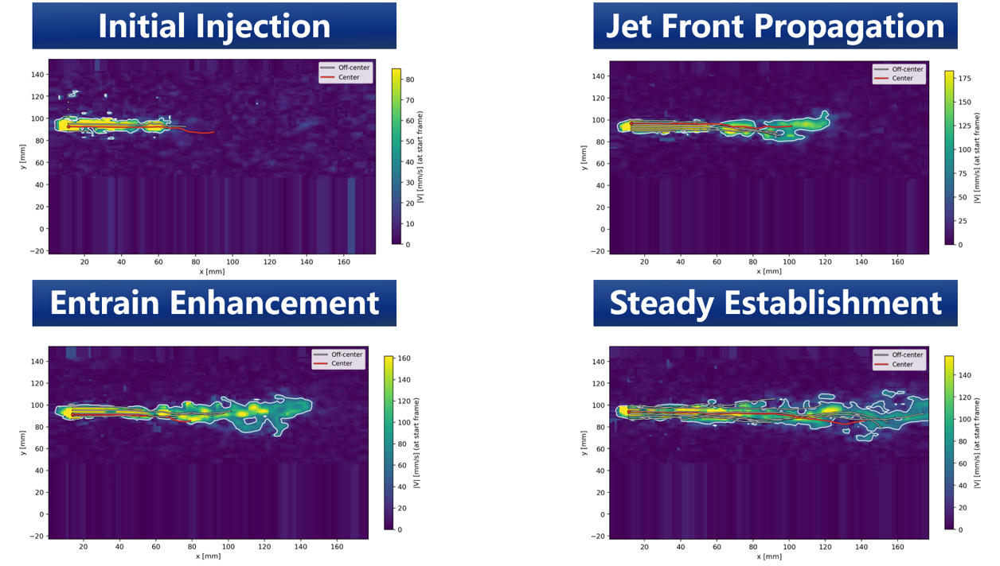
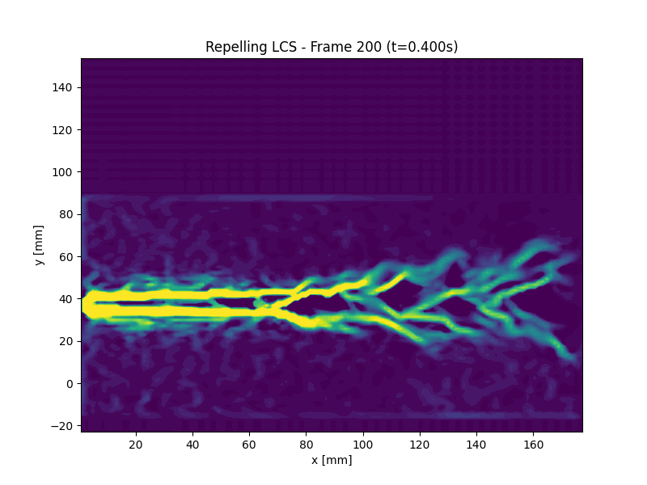

PIV Investigation of Entrainment in a Free Jet
Yahui Li, Yihan Liu, Mo Mu.Problem Statement
This project investigates the mechanism of a free jet, with a particular focus on its startup and mixing processes. The central question is how the jet boundary evolves over time and how the surrounding fluid is progressively entrained into the jet during its development.
Velocity Field and Pathline Integration
The basic velocity field is reconstructed from particle image velocimetry (PIV) measurements. Based on the measured Eulerian velocity field, particle pathlines are obtained by integrating the velocity field in time. This provides a direct way to track fluid particles during the unsteady jet evolution.
Pathline integration

LCS Analysis
Then, Lagrangian coherent structures (LCS) are introduced to identify material boundaries in the unsteady jet. This analysis helps us understand how ambient fluid is entrained during evolving.
In the forward-time integration, the front part shows laminar boundary, which remains highly symmetric and stable. There is almost no cross-boundary momentum exchange, indicating that entrainment has not yet developed.
On the latter part, fluid particles originally located in the ambient environment can be repelled into the main jet region, producing cross-boundary mixing. Meanwhile, the material line continuously expands in the y direction, indicating that the mixing strength increases as the jet evolves.
